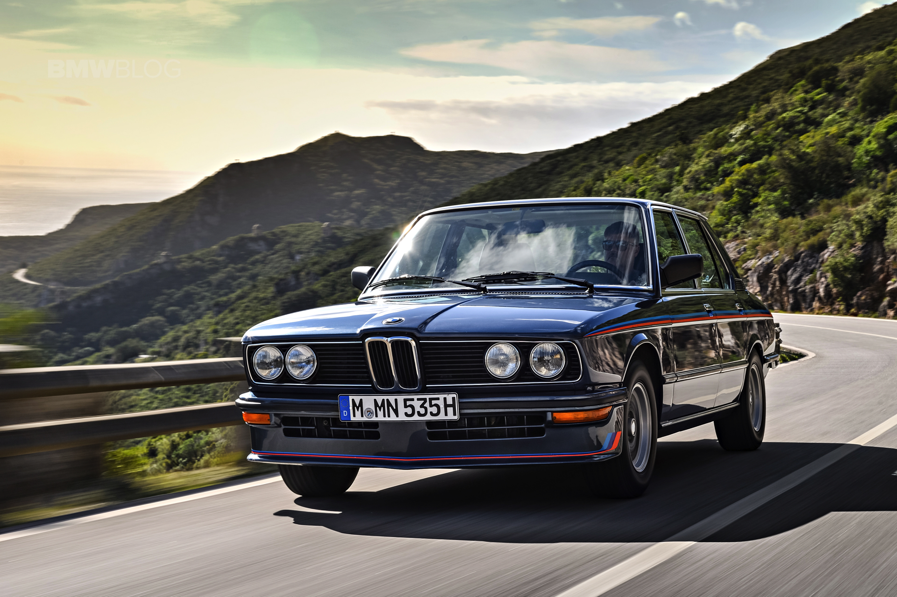

BMW M5
BMW M5 — доработанная подразделением BMW Motorsport версия автомобиля
BMW пятой серии.
Первое поколение было представлено в 1986 году. Последующие поколения M5 сменялись совместно с каждым поколением автомобилей пятой серии, включающей E34, E39, E60/61, F10.
С началом производства модели G30, после поступления первых заказов, с марта 2018 года началось также производство её M-версии.
Первое поколение было представлено в 1986 году. Последующие поколения M5 сменялись совместно с каждым поколением автомобилей пятой серии, включающей E34, E39, E60/61, F10.
С началом производства модели G30, после поступления первых заказов, с марта 2018 года началось также производство её M-версии.

E12
Первая BMW M535 E12 была показана в 1979 году на Франкфуртском автосалоне.
Производилась с 1980 по 1982 годы. Хотя изначально, автомобиль выпускался не как М5, однако специальная модель BMW E12 M535i 1980 года считается предшественником М5.
Это был третий автомобиль от мастерской BMW Motorsport. После окончания производства спортивных BMW E9 и BMW M1, модель M535i была переработана в седан пятой серии, и оснащалась двигателем BMW M90.
Производилась с 1980 по 1982 годы. Хотя изначально, автомобиль выпускался не как М5, однако специальная модель BMW E12 M535i 1980 года считается предшественником М5.
Это был третий автомобиль от мастерской BMW Motorsport. После окончания производства спортивных BMW E9 и BMW M1, модель M535i была переработана в седан пятой серии, и оснащалась двигателем BMW M90.
E28
Первый M5 (1985—1988), основой для которого стал BMW 5 серии
в кузове E28, был
впервые
представлен в феврале 1984 года на автосалоне в Амстердаме. Сохраняя все преимущества седана, M5
являлся
спортивным автомобилем. Автомобиль имеет шасси 535xi и обвес от M535i. На момент запуска в
производство,
E28
M5
был самым быстрым серийным седаном в мире.
Автомобили первого поколения M5 были ручной сборки, собирались в Мюнхене в летний сезон 1986. Впоследствии, производство M5 было перенесено на Даймлерштрассе в Гархинг, где продолжилась ручная сборка. Производство M5 продолжалось до ноября 1988 года, с окончанием выпуска шасси E28 в Германии с декабря 1987 года.
M5 собирались в четырёх различных версиях, в зависимости от страны экспорта. Существовали леворульные (LHD) европейские модели, праворульные (RHD) британские модели, североамериканские LHD (NA) модели для США и Канады, а также RHD для Южной Африки (ZA) модели.
Европейские и южноафриканские M5 имели двигатель M88/3 мощностью 286 л.с. (210 кВт). Североамериканские автомобили 1988 года имели двигатель S38B35, оснащённый каталитическим нейтрализатором, и выдающим 256 л.с.
Автомобили первого поколения M5 были ручной сборки, собирались в Мюнхене в летний сезон 1986. Впоследствии, производство M5 было перенесено на Даймлерштрассе в Гархинг, где продолжилась ручная сборка. Производство M5 продолжалось до ноября 1988 года, с окончанием выпуска шасси E28 в Германии с декабря 1987 года.
M5 собирались в четырёх различных версиях, в зависимости от страны экспорта. Существовали леворульные (LHD) европейские модели, праворульные (RHD) британские модели, североамериканские LHD (NA) модели для США и Канады, а также RHD для Южной Африки (ZA) модели.
Европейские и южноафриканские M5 имели двигатель M88/3 мощностью 286 л.с. (210 кВт). Североамериканские автомобили 1988 года имели двигатель S38B35, оснащённый каталитическим нейтрализатором, и выдающим 256 л.с.


Производство североамериканских моделей M5 продолжалось один год, с ноября 1986 по ноябрь 1987 года.
Помимо
96
автомобилей, собранных на заводе BMW в Росслине, ЮАР, все E28 M5 были собраны вручную BMW Motorsport
в
немецком
Гархинге.
Всего было произведено 2191 единиц, E28 M5 остаётся одним из самых редких среди серийно производившихся автомобилей BMW Motorsport — после BMW M1, BMW E34 M5 Touring, и BMW 850CSi.
Европейские модели M5 были доступны с некоторыми опциями, которых не было в моделях M5 для США, такие как буйволовая кожаная отделка и стеклянный люк. Автомобили с левым рулём (LHD) имели легкосплавные диски 185TR390, с правым рулём (RHD) имели колеса на 16x7.5 литых дисках. Самые первые модели с левым рулём имели VIN, начинающийся с «WBA» вместо «WBS», служившим для указания BMW Motorsport. Считается, что не более 15 автомобилей M5 вышли VIN-ом «WBA».
США/Канадские модели M5s имели опции: кожаные дверные панели, кожаная центральная консоль, ковры по всему салону, кондиционер, электрические стеклоподъёмники, электрический люк, электрические сиденья, круиз-контроль, бортовой компьютер, центральный замок и отделка Shadow-line были в стандарте. Североамериканские автомобили с левым рулём (LHD) имели литые диски 16x7.5. Индивидуальной опцией североамериканских моделей M5 стали передние сидения с электроподогревом, эта опция шла в стандарте для автомобилей канадского рынка. Так же для этих моделей был доступен оригинальный цвет «jet black».
Всего было произведено 2191 единиц, E28 M5 остаётся одним из самых редких среди серийно производившихся автомобилей BMW Motorsport — после BMW M1, BMW E34 M5 Touring, и BMW 850CSi.
Европейские модели M5 были доступны с некоторыми опциями, которых не было в моделях M5 для США, такие как буйволовая кожаная отделка и стеклянный люк. Автомобили с левым рулём (LHD) имели легкосплавные диски 185TR390, с правым рулём (RHD) имели колеса на 16x7.5 литых дисках. Самые первые модели с левым рулём имели VIN, начинающийся с «WBA» вместо «WBS», служившим для указания BMW Motorsport. Считается, что не более 15 автомобилей M5 вышли VIN-ом «WBA».
США/Канадские модели M5s имели опции: кожаные дверные панели, кожаная центральная консоль, ковры по всему салону, кондиционер, электрические стеклоподъёмники, электрический люк, электрические сиденья, круиз-контроль, бортовой компьютер, центральный замок и отделка Shadow-line были в стандарте. Североамериканские автомобили с левым рулём (LHD) имели литые диски 16x7.5. Индивидуальной опцией североамериканских моделей M5 стали передние сидения с электроподогревом, эта опция шла в стандарте для автомобилей канадского рынка. Так же для этих моделей был доступен оригинальный цвет «jet black».
E34
E34 M5 выпускали с 1988 по 1995 год на заводе BMW M GmbH в Гархинге,
Германия. Его, как и первый M5,
собирали вручную. В 1992 году появилась версия с кузовом универсал, получившая название М5 Touring.
На E34 M5 устанавливался двигатель S38B36, мощностью 316 л.с. (232 кВт) и крутящим моментом 360 Нм при 4750 об/мин. Двигатели на автомобилях продаваемых в Северной Америке и Швейцарии, оснащались каталитическим конвертером, и имели мощность 311 л.с. (229 кВт).
Во второй половине 1991 года, объём двигателя S38B38 был увеличен до 3,8 литров (кроме Северной Америки и ЮАР, где продолжал использоваться 3,6-литровый двигатель, что связано с местными законами о выбросах). Мощность выросла до 335 л.с. (250 кВт). 6-ступенчатая механическая трансмиссия была в стандарте в последнем модельном году (1995). E34 M5 стала последней M5 со специально разрабатывавшимся BMW Motorsport гоночным двигателем.
В 1992 году было собрано 891 автомобиль 5-дверный версия-универсал (Touring) с левым рулём.
Было всего четыре специальных версии E34 M5. Версии Cecotto, Winkelhock и 20 Jahre Motorsport, были доступны в Европе с левым рулём, а четвёртая модель, UK Limited с правым рулём продавалась только в Великобритании.
На E34 M5 устанавливался двигатель S38B36, мощностью 316 л.с. (232 кВт) и крутящим моментом 360 Нм при 4750 об/мин. Двигатели на автомобилях продаваемых в Северной Америке и Швейцарии, оснащались каталитическим конвертером, и имели мощность 311 л.с. (229 кВт).
Во второй половине 1991 года, объём двигателя S38B38 был увеличен до 3,8 литров (кроме Северной Америки и ЮАР, где продолжал использоваться 3,6-литровый двигатель, что связано с местными законами о выбросах). Мощность выросла до 335 л.с. (250 кВт). 6-ступенчатая механическая трансмиссия была в стандарте в последнем модельном году (1995). E34 M5 стала последней M5 со специально разрабатывавшимся BMW Motorsport гоночным двигателем.
В 1992 году было собрано 891 автомобиль 5-дверный версия-универсал (Touring) с левым рулём.
Было всего четыре специальных версии E34 M5. Версии Cecotto, Winkelhock и 20 Jahre Motorsport, были доступны в Европе с левым рулём, а четвёртая модель, UK Limited с правым рулём продавалась только в Великобритании.


В 1991 году, BMW просило двух гонщиков описать проект их «идеального» варианта E34 M5. Джонни Чекотто
был одним из тех гонщиков и он хотел видеть больше роскоши в M5, в том числе кожаную отделку рулевого колеса
и
подогрев сидений. Всего было выпущено 22 единицы Cecotto E34 M5 в цветах металлик Lagoon Green (266) и
металлик
Mauritius Blue (287).
Другим гонщиком был участник кузовных гонок, Йоахим Винкельхок. Он хотел облегчённый E34 M5, поэтому некоторые предметы роскоши были убраны. Его идеальная облегчённая версия M5 имела малый аккумулятор, американский топливный бак на 81 литр, меньшее количество шумоизоляции, были убраны маловажные элементы, такие как подголовники задних сидений и зеркало заднего вида. Установлены передние сидения Recaro и замшевый руль M-Technic II диаметром 385 мм, изменённые рычаги переключения передач и стояночного тормоза. Конструкция сидений, замшевая обивка и красные ремни безопасности были аналогичны использовавшимся на Sport Evo E30 M3. Всего было собрано 51 единица Winkelhock E34 M5, в комплектации Jet Black (668) и с обвесами цвете металлик Sterling Silver (244).
Другим гонщиком был участник кузовных гонок, Йоахим Винкельхок. Он хотел облегчённый E34 M5, поэтому некоторые предметы роскоши были убраны. Его идеальная облегчённая версия M5 имела малый аккумулятор, американский топливный бак на 81 литр, меньшее количество шумоизоляции, были убраны маловажные элементы, такие как подголовники задних сидений и зеркало заднего вида. Установлены передние сидения Recaro и замшевый руль M-Technic II диаметром 385 мм, изменённые рычаги переключения передач и стояночного тормоза. Конструкция сидений, замшевая обивка и красные ремни безопасности были аналогичны использовавшимся на Sport Evo E30 M3. Всего было собрано 51 единица Winkelhock E34 M5, в комплектации Jet Black (668) и с обвесами цвете металлик Sterling Silver (244).
В честь 20-летия BMW Motorsport, BMW в конце 1992 года было построено 20 специальных автомобилей
европейских M5. Они имели двигатель объёмом 3,8 л, один цвет кузова Mugello Red (274) и ряд других
особенностей,
такие
как применение в отделке углеродного волокна и специальных зеркал заднего вида. Уникальная обшивка сидений и
дверных панелей имеет элементы из алькантары. Алькантара так же использована в обшивке рулевого колеса,
рычагов
переключения передач и стояночного тормоза. У сидений имеются красные ремни безопасности с надписями
«BMW Motorsport».
Во ознаменование выпуска праворульных E34 M5, 50 экземпляров E34 M5 Limited Edition были собраны между мартом и июнем 1995 года в одном из двух уникальных цветов и комбинаций отделки: металлик Rosso Red (369) с кожаной обивкой и деревянными вставками под тополь (15 единиц) или металлик Orinoco (406) с кожаной обивкой и деревянными вставками под клён (35 единиц). Все автомобили E34 M5 Limited Edition имеют 3-спицевое спортивное рулевое колесо, Shadowline, электрические люк и передние сидения, омыватели передних фар и кондиционер с ручным управлением.
Кроме того, 20 единиц модели M5 Touring были построены в 1995 году для продажи в Италии. Эта партия фактически не является специальным выпуском, они были заказаны итальянскими дилерами BMW. Так же не следует путать их с моделями Alpina B10 E34.
Во ознаменование выпуска праворульных E34 M5, 50 экземпляров E34 M5 Limited Edition были собраны между мартом и июнем 1995 года в одном из двух уникальных цветов и комбинаций отделки: металлик Rosso Red (369) с кожаной обивкой и деревянными вставками под тополь (15 единиц) или металлик Orinoco (406) с кожаной обивкой и деревянными вставками под клён (35 единиц). Все автомобили E34 M5 Limited Edition имеют 3-спицевое спортивное рулевое колесо, Shadowline, электрические люк и передние сидения, омыватели передних фар и кондиционер с ручным управлением.
Кроме того, 20 единиц модели M5 Touring были построены в 1995 году для продажи в Италии. Эта партия фактически не является специальным выпуском, они были заказаны итальянскими дилерами BMW. Так же не следует путать их с моделями Alpina B10 E34.


E39
E39 (1998—2003) получил двигатель значительно большей мощности и производился в
гораздо
большем
количестве, чем
предыдущие поколения. В отличие от предшественников, E39 M5 собирали не вручную, а на обычной
производственной
линии на заводе в Дингольфинге, Германия.
Производство началось с октября 1998 года, после того как он был представлен в этом же году на Женевском автосалоне. В общей сложности в период с 1999 по 2003 годы было произведено 20482 единиц E39 M-версии. Они имели три модификации: европейская с левым и правым рулём, и североамериканская.
На E39 M5 устанавливался V-образный восьмицилиндровый двигатель S62 объёмом 5 литров, выдающий мощность в 400 л.с. (294 кВт).
На все E39 M5 так же устанавливалась коробка Getrag type D, 6-ступенчатая механическая коробка, имеющая передаточные числа 4,23 : 2,53 : 1,67 : 1,23 : 1,00 : 0,83.
Производство началось с октября 1998 года, после того как он был представлен в этом же году на Женевском автосалоне. В общей сложности в период с 1999 по 2003 годы было произведено 20482 единиц E39 M-версии. Они имели три модификации: европейская с левым и правым рулём, и североамериканская.
На E39 M5 устанавливался V-образный восьмицилиндровый двигатель S62 объёмом 5 литров, выдающий мощность в 400 л.с. (294 кВт).
На все E39 M5 так же устанавливалась коробка Getrag type D, 6-ступенчатая механическая коробка, имеющая передаточные числа 4,23 : 2,53 : 1,67 : 1,23 : 1,00 : 0,83.
Аналогичная трансмиссия использовалось на E39 540i, но в связи с установкой более мощного двигателя S62,
были
внесены некоторые изменения. Различия состоят в использовании армированного сцепления, изменение
передаточного
числа главной передачи на 3,15:1, применение самоблокирующегося дифференциала.
На североамериканском рынке BMW официально заявлены (упоминается в брошюре 2003 года) время разгона до 100 км/ч за 4,8 секунды и максимальная скорость, ограниченная электроникой составляет 250 км/ч.[5] Фактическое ограничение максимальной скорости составляет 300 км/ч. Круг Нюрбургринг E39 M5 пройден за время 8:20, а круг Top Gear 1:27,0.
Хотя был построен всего один прототип E39 M5 Touring, BMW M решили не производить его серийно по финансовым соображениям. В феврале 2010 года в рамках 25-летия BMW М5, этот прототип M5 был показан с кабриолетом E34 M5 Cabriolet, который также серийно не производился (кабриолет строился, но в рамках E63/64 BMW 6 серии и M6, а также следующих поколений 5 серии и M5).
На североамериканском рынке BMW официально заявлены (упоминается в брошюре 2003 года) время разгона до 100 км/ч за 4,8 секунды и максимальная скорость, ограниченная электроникой составляет 250 км/ч.[5] Фактическое ограничение максимальной скорости составляет 300 км/ч. Круг Нюрбургринг E39 M5 пройден за время 8:20, а круг Top Gear 1:27,0.
Хотя был построен всего один прототип E39 M5 Touring, BMW M решили не производить его серийно по финансовым соображениям. В феврале 2010 года в рамках 25-летия BMW М5, этот прототип M5 был показан с кабриолетом E34 M5 Cabriolet, который также серийно не производился (кабриолет строился, но в рамках E63/64 BMW 6 серии и M6, а также следующих поколений 5 серии и M5).


E60
M-версия E60 (2005—2008) появилась в 2005 году, и комплектовалась 5-литровым
атмосферным
V10, мощностью
507
л.с. и 7-ступенчатой роботизированной коробкой с одним сцеплением. Разгон до 100 км/ч за 4,7 секунды,
максимальная скорость ограничена электроникой до 250 км/ч. Таким образом, E60 M5 стал первым в мире
серийным
седаном, с V10 бензиновым двигателем, а также самым быстрым седаном в мире на момент выпуска.
Модель E60 M5 стала наиболее успешной среди M-версий пятой серии, несмотря на то, что в производстве она находилась на год меньше, чем E39 M5. За 5 лет производства было выпущено 20548 единиц, из них 19523 седанов и 1025 универсалов. 8800 седанов были проданы в США, в Великобритании и Ирландии продано 1776 автомобилей, 1357 в Японии, а на внутреннем немецком рынке 1647 единиц. Так же порядка 512 единиц попали на итальянский рынок и 339 на австралийский.
V-образный десятицилиндровый двигатель S85 выдаёт 507 л.с. (373 кВт) мощности и 520 Нм крутящего момента. Для данной модели двигатель и трансмиссия были разработаны с нуля; они не были основаны на других моделях. Помимо этого, двигатель оснащён фирменной двойной системой газораспределения VANOS, которая позволяет регулировать работу и впускных, и выпускных клапанов. Каждый цилиндр модели оснащается собственной дроссельной заслонкой.
На автомобилях BMW M5, вместе с E63/64 BMW M6, предполагалось использовать новую полуавтоматическую коробку Getrag SMG III с семью скоростями, которая выполняет переключение передач с точностью до 65 миллисекунд. Секвентальная коробка SMG III включает в себя функции помогающие при движении по крутым подъёмам и спускам, автоматический режим переключения и др. Однако, во многих отзывах говорится о том, что при автоматическом режиме передачи при редких или частых остановках переключаются менее плавно, чем у обычной автоматической трансмиссии.
Модель E60 M5 стала наиболее успешной среди M-версий пятой серии, несмотря на то, что в производстве она находилась на год меньше, чем E39 M5. За 5 лет производства было выпущено 20548 единиц, из них 19523 седанов и 1025 универсалов. 8800 седанов были проданы в США, в Великобритании и Ирландии продано 1776 автомобилей, 1357 в Японии, а на внутреннем немецком рынке 1647 единиц. Так же порядка 512 единиц попали на итальянский рынок и 339 на австралийский.
V-образный десятицилиндровый двигатель S85 выдаёт 507 л.с. (373 кВт) мощности и 520 Нм крутящего момента. Для данной модели двигатель и трансмиссия были разработаны с нуля; они не были основаны на других моделях. Помимо этого, двигатель оснащён фирменной двойной системой газораспределения VANOS, которая позволяет регулировать работу и впускных, и выпускных клапанов. Каждый цилиндр модели оснащается собственной дроссельной заслонкой.
На автомобилях BMW M5, вместе с E63/64 BMW M6, предполагалось использовать новую полуавтоматическую коробку Getrag SMG III с семью скоростями, которая выполняет переключение передач с точностью до 65 миллисекунд. Секвентальная коробка SMG III включает в себя функции помогающие при движении по крутым подъёмам и спускам, автоматический режим переключения и др. Однако, во многих отзывах говорится о том, что при автоматическом режиме передачи при редких или частых остановках переключаются менее плавно, чем у обычной автоматической трансмиссии.
На основании спроса Северной Америке, с октября 2006 года для этого рынка стала доступна также
6-ступенчатая
механическая трансмиссия. Автомобили с 6-ступенчатой механикой на некоторых тестах показывали
незначительно
меньшие результаты, кроме того, динамический контроль устойчивости не может быть отключён в отличие от
версии с
SMG. SMG III имеет функцию «Launch Control», так, европейские модели имеют возможность старта с 4000
оборотов в
минуту, но, автомобили для рынка США могут стартовать уже с 1500 оборотов в минуту.
M5 имеют несколько функций, аналогичных используемым на автомобилях Формулы 1 в системах управления двигателем и трансмиссией. Это система launch control, позволяющая стартовать на больших оборотах. Полуавтоматическая трансмиссия Getrag SMG III имеет возможность изменять режимы переключения: автоматический или ручной, также есть возможность переключать передачи на определённых скоростях (в общей сложности, существует 11 программ переключения, называемые Drivelogic). Ручное переключение возможно с помощью консоли переключения или под-рулевых лепестков, оба способа доступны на всех M5 с коробкой SMG. Консоль переключения работает по принципу типтроника; её отклонение назад (к «+») повышает передачу, а вперёд (к «-») понижает, нейтраль выбирается перемещением влево. У автомобиля также на панели навигации имеется кнопка «Power» (с маркировкой «М»), который предоставляет доступ к трём режимам: P400 (ограничение мощности двигателя до 400 л.с. (294 кВт) для ежедневной езды), P500 (полная мощность в 507 л.с. (373 кВт)), и P500 S (выборочный режим, с полной мощностью). P400 при запуске является режимом по умолчанию, режим P500 выбираются с помощью IDrive, а затем активируется P500 S с помощью кнопки «M».
M5 имеют несколько функций, аналогичных используемым на автомобилях Формулы 1 в системах управления двигателем и трансмиссией. Это система launch control, позволяющая стартовать на больших оборотах. Полуавтоматическая трансмиссия Getrag SMG III имеет возможность изменять режимы переключения: автоматический или ручной, также есть возможность переключать передачи на определённых скоростях (в общей сложности, существует 11 программ переключения, называемые Drivelogic). Ручное переключение возможно с помощью консоли переключения или под-рулевых лепестков, оба способа доступны на всех M5 с коробкой SMG. Консоль переключения работает по принципу типтроника; её отклонение назад (к «+») повышает передачу, а вперёд (к «-») понижает, нейтраль выбирается перемещением влево. У автомобиля также на панели навигации имеется кнопка «Power» (с маркировкой «М»), который предоставляет доступ к трём режимам: P400 (ограничение мощности двигателя до 400 л.с. (294 кВт) для ежедневной езды), P500 (полная мощность в 507 л.с. (373 кВт)), и P500 S (выборочный режим, с полной мощностью). P400 при запуске является режимом по умолчанию, режим P500 выбираются с помощью IDrive, а затем активируется P500 S с помощью кнопки «M».


BMW заявлены разгон автомобиля до 100 км/ч за время 4,2 секунды (позже, в разных тестах показаны
результаты от
4,1 до 4,5 секунд) и максимальная скорость 205 миль/ч (330 км/ч). Сравнительное испытание журнала Motor
Trend
показало, хоть E55 AMG и показал более быстрый разгон до 100 км/ч за 4,2 секунды по сравнению 4,5
секундами,
показанными М5, последняя имеет высокие ходовые качества. В австралийском издании журнала Wheels в июле
2005
года отмечено время разгона ранней E60 M5, построенной осенью в 2004 году, за 4,4 секунды.
На Нюрбургринге E60 M5 показан результат прохождения круга за 8:13. На круге Top Gear был показан результат 1:26,2.
E60 M5 считался в годы своего производства эталоном представительских седанов в своём классе. Джереми Кларксон говорил о нём:
«Это мир автомобильного совершенства. Если вы хотите взять его... не беспокойтесь ни о чём. Не имеет значения, что у вас есть. Не имеет значения, что вы когда-либо водили. Он быстрее, и более удивителен. Вы можете просто не верить, что находитесь в большом 4-дверном седане, потому что он движется, чувствуется, и звучит как Ferrari 430, и это лучший автомобиль, на котором я когда-либо ездил. Руль, тормоза, мощность. И этот звук... По опыту вождения, он просто доминирует над всеми... Это эпический автомобиль, просто великолепно. » Версия-универсал E61 M5 Touring появилась в 2007 году, и стала вторым M-универсалом пятой серии после E34. Он имеет одинаковую трансмиссию с последним, конкурентами этой версии считаются Audi RS6 Avant и Mercedes-Benz E63 AMG Estate. Touring никогда не предлагаются для продажи в Северной Америке.
На Нюрбургринге E60 M5 показан результат прохождения круга за 8:13. На круге Top Gear был показан результат 1:26,2.
E60 M5 считался в годы своего производства эталоном представительских седанов в своём классе. Джереми Кларксон говорил о нём:
«Это мир автомобильного совершенства. Если вы хотите взять его... не беспокойтесь ни о чём. Не имеет значения, что у вас есть. Не имеет значения, что вы когда-либо водили. Он быстрее, и более удивителен. Вы можете просто не верить, что находитесь в большом 4-дверном седане, потому что он движется, чувствуется, и звучит как Ferrari 430, и это лучший автомобиль, на котором я когда-либо ездил. Руль, тормоза, мощность. И этот звук... По опыту вождения, он просто доминирует над всеми... Это эпический автомобиль, просто великолепно. » Версия-универсал E61 M5 Touring появилась в 2007 году, и стала вторым M-универсалом пятой серии после E34. Он имеет одинаковую трансмиссию с последним, конкурентами этой версии считаются Audi RS6 Avant и Mercedes-Benz E63 AMG Estate. Touring никогда не предлагаются для продажи в Северной Америке.
F10
BMW M5 F10 — это шестое поколение BMW заряженной «пятой» серии, которое было
представлено 5
июня 2011
года на
Франкфуртском автосалоне. Продажи автомобиля стартовали с ноября 2011, и на выбор покупателям доступен
один тип
двигателя в вариациях 560 и 575 л.с. с прежним крутящим моментом. Так же у автомобиля изменилась
подвеска
(втулки, пружины, амортизаторы, стабилизаторы поперечной устойчивости), уменьшив клиренс на 10 мм.
Прямым
конкурентом является Mercedes-Benz E63 AMG/S 2014 модельного года.
На автомобиле используется двигатель S63 V8 объёмом 4395 см³ (S63B44Tü), выдающий 560 л.с. (412 кВт) при 6000 — 7000 об/мин и максимальный крутящий момент 680 Нм в диапазоне 1500 — 5750 об/мин.[24] Решение с турбированием M5 не встретило поддержки, так как турбонаддув не даёт большой момент на малых оборотах.
С двигателем идёт 7-ступенчатая коробка с двойным сцеплением, в качестве опции для рынка США существует возможность установки 6-ступенчатой механической трансмиссии.
На автомобиле используется двигатель S63 V8 объёмом 4395 см³ (S63B44Tü), выдающий 560 л.с. (412 кВт) при 6000 — 7000 об/мин и максимальный крутящий момент 680 Нм в диапазоне 1500 — 5750 об/мин.[24] Решение с турбированием M5 не встретило поддержки, так как турбонаддув не даёт большой момент на малых оборотах.
С двигателем идёт 7-ступенчатая коробка с двойным сцеплением, в качестве опции для рынка США существует возможность установки 6-ступенчатой механической трансмиссии.


Особенностью автомобиля стали стандартные, окрашенные в синий цвет, тормозные суппорта и 20-дюймовые
5-спицевые
колеса. В поисках способов снижения снаряжённой массы F10 M5, заменившей более тяжёлый E60, BMW
благодаря
партнёрству с SGL Group, использовала материалы из углеродного волокна (карбон). Несмотря на это, F10
имеет
значительный вес, что влияет на тягу двигателя и управляемость автомобиля.
15 июня 2011 года, BMW прошёл официальный пресс-релиз F10 M5. Разгон до 100 км/ч составляет 4,4 секунды, максимальная скорость 250 км/ч, или 305 км/ч на версии M Driver’s Package. Масса автомобиля составила 1945 кг, что на 90 кг больше предыдущей модели E60/61. Расход топлива составляет 9,9 литров на 100 км, что на 31 % лучше по сравнению с предыдущей моделью. На активном M-дифференциале крутящий момент делится между задними колёсами, размер которых 295/30/20. Размеры передних шин 265/35/20. F10 был представлен в сентябре на Франкфуртском автосалоне, и в Северной Америке на автосалоне в Лос-Анджелесе 18 ноября.
На 30-летие автомобилей BMW M5 было построено 300 единиц специальной версии, названных «30 Jahre BMW M5». Все 300 автомобилей были окрашены специальной краской оттенка холодного тёмно-серебристого металлика. Внутри на порогах, на приборной панели и других элементах имеются надписи «30 Jahre M5» и «1/300». Также логотип «30 Jahre M5» вышит на всех четырёх сидениях представительского седана. Мощность двигателей ограниченной версии M5 составляет 600 л.с., крутящий момент — 700 Нм. Разгон до 100 км/ч за 3,9 секунды. Автомобили этой серии были проданы по всему миру.
15 июня 2011 года, BMW прошёл официальный пресс-релиз F10 M5. Разгон до 100 км/ч составляет 4,4 секунды, максимальная скорость 250 км/ч, или 305 км/ч на версии M Driver’s Package. Масса автомобиля составила 1945 кг, что на 90 кг больше предыдущей модели E60/61. Расход топлива составляет 9,9 литров на 100 км, что на 31 % лучше по сравнению с предыдущей моделью. На активном M-дифференциале крутящий момент делится между задними колёсами, размер которых 295/30/20. Размеры передних шин 265/35/20. F10 был представлен в сентябре на Франкфуртском автосалоне, и в Северной Америке на автосалоне в Лос-Анджелесе 18 ноября.
На 30-летие автомобилей BMW M5 было построено 300 единиц специальной версии, названных «30 Jahre BMW M5». Все 300 автомобилей были окрашены специальной краской оттенка холодного тёмно-серебристого металлика. Внутри на порогах, на приборной панели и других элементах имеются надписи «30 Jahre M5» и «1/300». Также логотип «30 Jahre M5» вышит на всех четырёх сидениях представительского седана. Мощность двигателей ограниченной версии M5 составляет 600 л.с., крутящий момент — 700 Нм. Разгон до 100 км/ч за 3,9 секунды. Автомобили этой серии были проданы по всему миру.
F90
Премьера состоялась 21 августа 2017 года на Франкфуртском автосалоне.
Заказ автомобили доступен с 31 марта 2018 года, начальная цена состоит 117,900 евро. Оснащается
двигатель V8, S63B44T4 мощностью 600 л.с. при 3500-6700 об/мин.